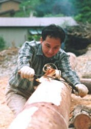
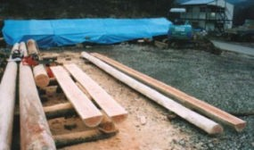
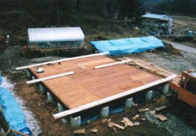
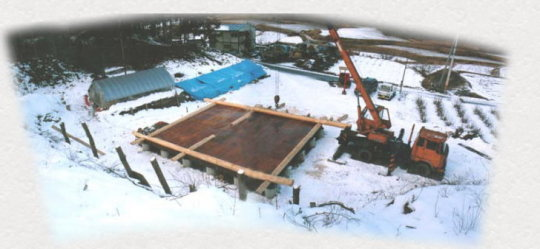

１９９７． １2月

１９９７． １2月 |
|
なんと言っても、ログワークがログハウス作りの醍醐味
皮むきから始まり、チェーンソーでのカット、そしてクレーンで一段一段乗せていく‥‥
まず、１段目は半割にしたハーフログ、それとシルログから始まる
|  | ログワークの中で 最もきついのが やはり皮むきだろう １本むくのに半日ほど かかる |
 ハーフログの加工 |
|  | ハーフログのセットが完了 |
|  第１ラウンド、ハーフログとシルログが乗って、やっと”ログハウスを作り始めた” と、実感がわいてくる。 １９９７年の作業はここまで‥ 来年は、皮むき、スクライブ、カット、セットの繰り返しで、ひたすらログを積む日々が続く。 1997．12．29 |